Exploring Related Factors and Comorbidities of T2D
knitr::opts_chunk$set(echo = TRUE, message = FALSE, warning = FALSE)
library(tidyverse)
library(rlang)
library(viridis)
theme_set(theme_minimal() + theme(legend.position = "right"))
options(
ggplot2.continuous.colour = "viridis",
ggplot2.continuous.fill = "viridis"
)
scale_colour_discrete = scale_colour_viridis_d
scale_fill_discrete = scale_fill_viridis_dIn this section, we explored the relationship between lifestyle,
health factors, and comorbidities and the different possible diagnoses
of diabetes in our data. We compared each factor to one of our three
outcome variables, has_diabetes, diab_type,
and eval_type, to identify the overarching relationship
between specific demographics and diabetes, along with similarities and
differences between the various kinds of diagnosis.
# Load and wrangle the overall data.
diabetes_df = read_csv("data/cleaned_diabetes_data.csv")
# Binary helper function
recode_factor = function(var) {
factor(var, levels = c("No", "Yes"))
}
# Clean the diabetes variables
diabetes_df =
diabetes_df |>
mutate(
has_diabetes = factor(has_diabetes, levels = c("Not diabetic", "Pre-diabetic", "Diabetic", "Gestational")),
sex_at_birth = fct_infreq(sex_at_birth),
age_category = factor(age_category, levels = c("18-24", "25-29", "30-34", "35-39", "40-44", "45-49", "50-54", "55-59", "60-64", "65-69", "70-74", "75-79", "80+"), order = TRUE),
pregnant = recode_factor(pregnant),
eval_type = factor(eval_type, levels = c("Not diabetic", "Type 1", "Type 2")),
diab_type = factor(diab_type, levels = c("Type 1", "Type 2"))
)Demographics
diabetes_demographics =
diabetes_df |>
mutate(
good_health = recode_factor(good_health),
physical_activity = factor(
physical_activity,
levels = c(
"Highly active",
"Active",
"Insufficiently active",
"Inactive"
)
),
urb_rural = factor(urb_rural, levels = c("Urban", "Rural")),
race = as.factor(race),
income = factor(
income,
levels = c(
"Less than 15K",
"15K=25K",
"25-35K",
"35K-50K",
"50K-100K",
"100K-200K",
"More than 200K"
)
),
education = factor(education,
levels = c(
"Kindergarten or less",
"Elementary",
"Some high school",
"High school graduate",
"Some college or technical school",
"College graduate"
)
)
) |>
select(has_diabetes, diab_type, eval_type, good_health, physical_activity, urb_rural, race, income, education) |>
rename(
`Has Diabetes` = has_diabetes,
`Reported Type` = diab_type,
`Evaluated Type` = eval_type,
`In Good Health` = good_health,
`Level of Physical Activity` = physical_activity,
`Urban/Rural Status` = urb_rural,
`Race/Ethnicity` = race,
`Income Level` = income,
`Educational Attainment` = education
)This section explores the distribution of demographic information among diabetes diagnoses.
- Whether the respondent is in good health
- Level of physical activity
- Living in an urban vs. rural area
- Race/Ethnicity
- Income level
- Educational attainment
# Define a function for the plot
comorbidities_plot = function(df, comorbidity, diabetes) {
# Convert character strings to symbols
comorbidity_sym <- rlang::sym(comorbidity)
diabetes_sym <- rlang::sym(diabetes)
df |>
filter(!is.na(!!comorbidity_sym), !(is.na(!!diabetes_sym))) |>
group_by(!!comorbidity_sym, !!diabetes_sym) |>
summarize(n = n(), .groups = 'drop') %>%
group_by(!!diabetes_sym) %>%
mutate(Percent = n / sum(n) * 100) |>
ggplot(aes(x = !!diabetes_sym, y = Percent, fill = !!comorbidity_sym)) +
geom_bar(stat = "identity", position = "dodge") +
geom_text(aes(label = sprintf("%.1f", Percent)),
position = position_dodge(width = 0.9),
size = 2.5,
vjust = -0.5) +
labs(
title = str_c(diabetes, " by ", comorbidity),
x = diabetes,
y = "Percent (%)",
fill = comorbidity) +
scale_fill_viridis_d(na.value = "gray50", option = "D") +
theme_minimal() +
theme(legend.position="bottom")
}People with better health and physical activity practices have fewer diabetes diagnoses. Between type I and type II diagnoses, physical activity is about the same, based on the reported type. On the other hand, type II diagnoses have a higher percentage of inactive people, based on the evaluated type.
Urban/rural status is pretty similar acoss the board, but that may be because the overall percentage of respondents is unevenly distributed between urban and rural populations. We would suggest checking that distribution.
We see a similar case for race and ethnicity - a weighting procedure may better show if there is truly a difference in diabetes diagnosis between different races/ethnicities. We see that a higher percentage of Hispanic respondents had type I diabetes compared to type II in both the reported and evaluated type comparisons, whereas white respondents were more likely to have type II diabetes than type I diabetes.
While we don’t see any major differences jumps in diabetes diagnosis, there are a few things to note:
People making 50K-100K make up a large portion of the survey respondents According to the reported type, people making 50-100K made up a larger portion of the type II respondents than they did type I However, that looks relatively the same in the evaluated type comparison
People with (at least) a college degree make up a larger proportion of the sample of people who are not diabetic than the sample of people who are diabetic. Surprisingly, accordiing to the evaluated type variable, a significantly larger percentage of people who graduated high school have type I diabetes, compared to the percentage of people who graduated high school with type II diabetes.
Good Health
demo = "In Good Health"has_diabetes
comorbidities_plot(diabetes_demographics, demo, "Has Diabetes")diab_type
comorbidities_plot(diabetes_demographics, demo, "Reported Type")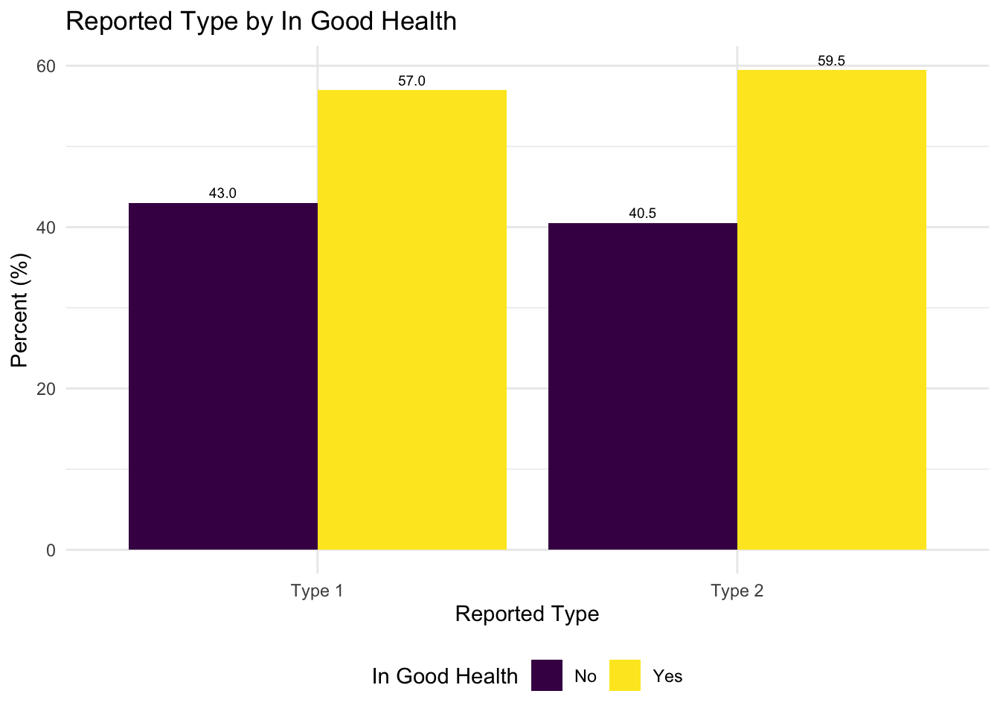
eval_type
comorbidities_plot(diabetes_demographics, demo, "Evaluated Type")Physical Activity
demo = "Level of Physical Activity"has_diabetes
comorbidities_plot(diabetes_demographics, demo, "Has Diabetes")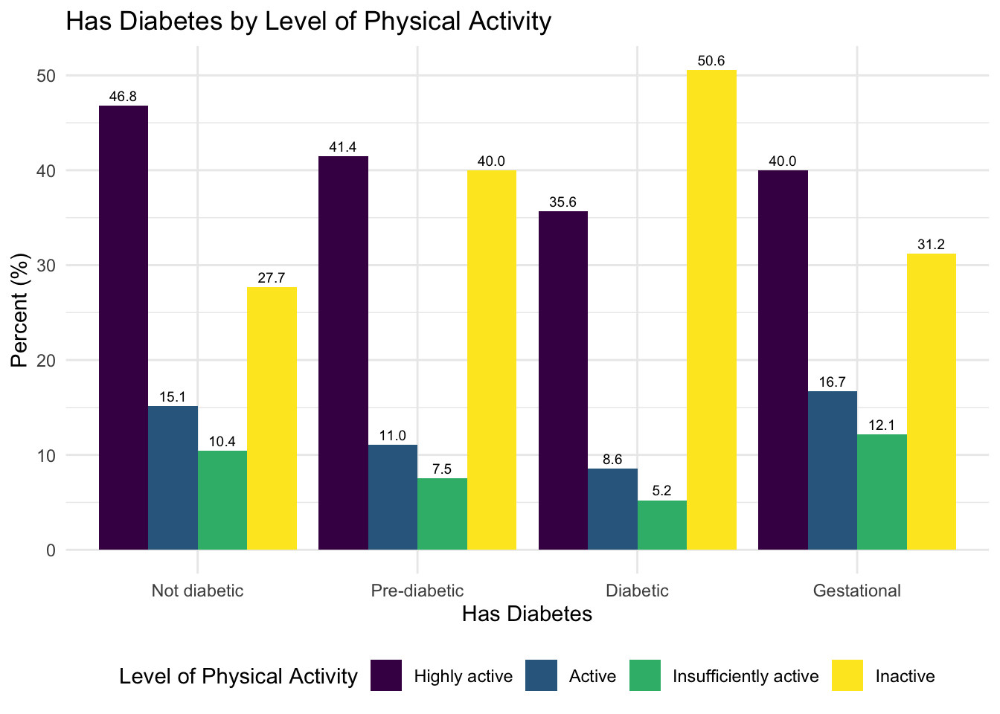
diab_type
comorbidities_plot(diabetes_demographics, demo, "Reported Type")
eval_type
comorbidities_plot(diabetes_demographics, demo, "Evaluated Type")
Urban/Rural
demo = "Urban/Rural Status"has_diabetes
comorbidities_plot(diabetes_demographics, demo, "Has Diabetes")diab_type
comorbidities_plot(diabetes_demographics, demo, "Reported Type")eval_type
comorbidities_plot(diabetes_demographics, demo, "Evaluated Type")
Race/Ethnicity
demo = "Race/Ethnicity"has_diabetes
comorbidities_plot(diabetes_demographics, demo, "Has Diabetes")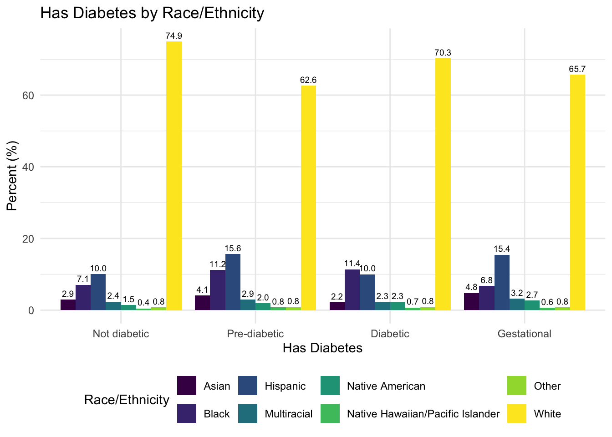
diab_type
comorbidities_plot(diabetes_demographics, demo, "Reported Type")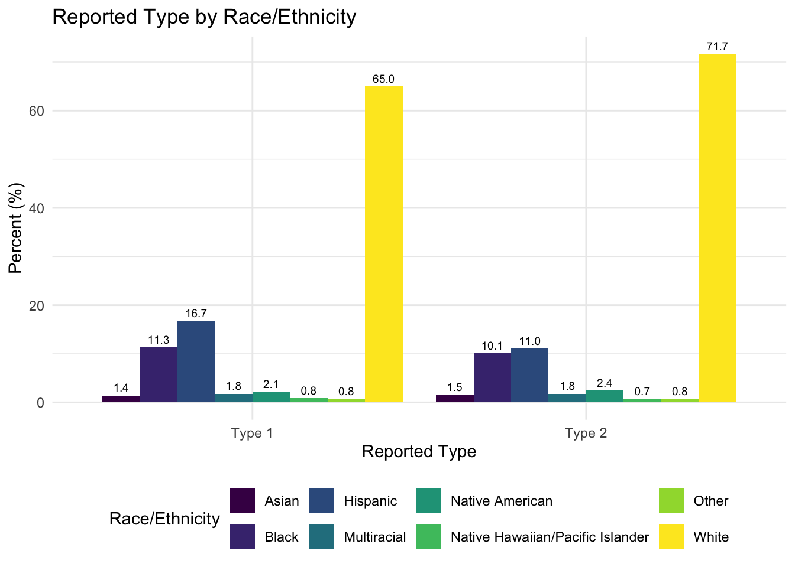
eval_type
comorbidities_plot(diabetes_demographics, demo, "Evaluated Type")Income
demo = "Income Level"has_diabetes
comorbidities_plot(diabetes_demographics, demo, "Has Diabetes")diab_type
comorbidities_plot(diabetes_demographics, demo, "Reported Type")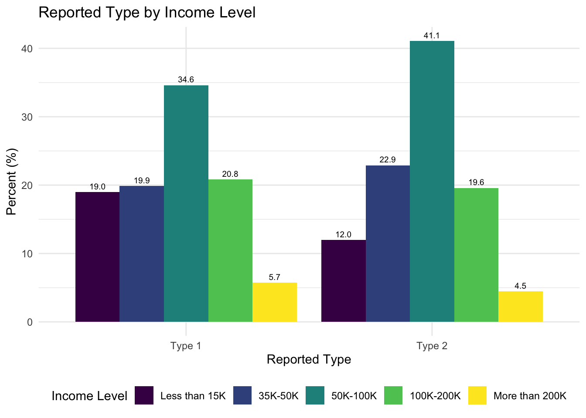
eval_type
comorbidities_plot(diabetes_demographics, demo, "Evaluated Type")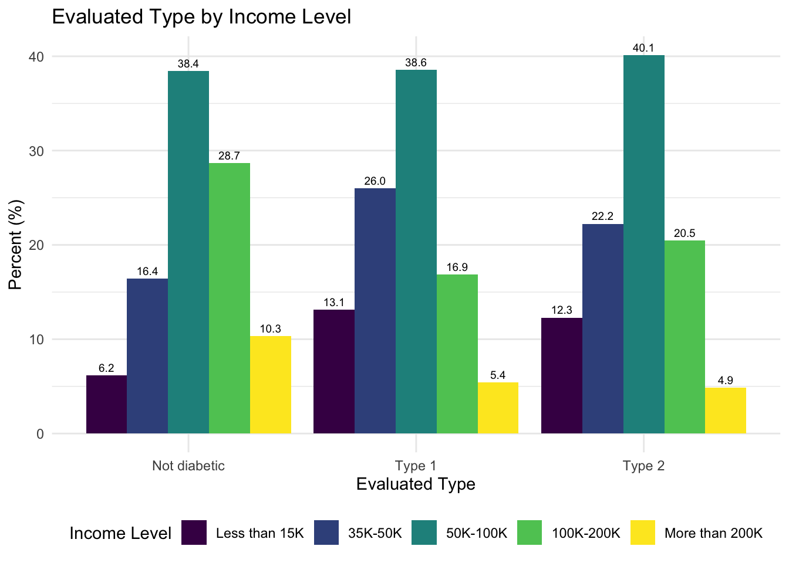
Education
demo = "Educational Attainment"has_diabetes
comorbidities_plot(diabetes_demographics, demo, "Has Diabetes")
diab_type
comorbidities_plot(diabetes_demographics, demo, "Reported Type")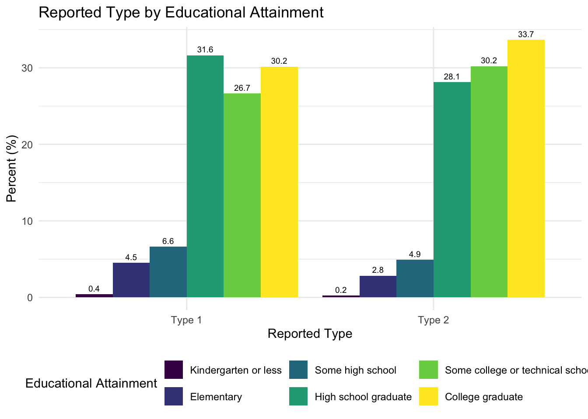
eval_type
comorbidities_plot(diabetes_demographics, demo, "Evaluated Type")
Comorbidities
diabetes_comorbidities =
diabetes_df |>
mutate(
kidney_disease = recode_factor(kidney_disease),
depression = recode_factor(depression),
arthritis = recode_factor(arthritis),
michd = recode_factor(michd),
blind = recode_factor(blind),
covid = recode_factor(covid),
stroke = recode_factor(stroke),
bronchitis = recode_factor(bronchitis),
asthma_ever = recode_factor(asthma_ever),
asthma_now = recode_factor(asthma_now)
) |>
select(has_diabetes, diab_type, eval_type, kidney_disease, arthritis, depression, michd, blind, covid, stroke, bronchitis, asthma_ever, asthma_now) |>
rename(
`History of Kidney Disease` = kidney_disease,
`History of MI/CHD` = michd,
`History of Depression` = depression,
`Blindness` = blind,
`History of Stroke` = stroke,
`History of Arthritis` = arthritis,
`History of Asthma` = asthma_ever,
`Currently Have Asthma` = asthma_now,
`Ever Tested Positive for Covid-19` = covid,
`History of Bronchitis` = bronchitis,
`Has Diabetes` = has_diabetes,
`Reported Type` = diab_type,
`Evaluated Type` = eval_type
)This section explores the distribution of co-morbidities across diabetes diagnoses.
- History of kidney disease
- History of depression
- Blindness
- History of myocardial infarction (MI) or coronary heart disease (CHD)
- History of stroke
- History of arthritis
- History of asthma
- Currently has asthma (only asked of people who answered yes to history of asthma)
- Ever tested positive for COVID-19
- History of bronchitis
A larger proportion of people with diabetes also have kidney disease than other groups. The reported type shows no significant difference in diagnosis across type of diabetes, but the evaluated type shows that people with kidney disease are more highly represented in the group with type II diabetes.
Diabetes has no significant difference between groups who self-reported diabetes status, but according to our evaluated type, people with type I diabetes reported having depression more than other groups.
Blindness is slightly more common in people who have diabetes compared to people who are not diabetic, but we see some opposition between reported and evaluated type I and II diabetes status.
History of MI/CHD is more common in diabetics than non-diabetics. Reported type shows no difference, but evaluated status shows a significant increase in the percentage of people with MI/CHD in the type II group. Stroke is similar but less significant.
Arthritis is more common in diabetics than non-diabetics. There seems to be a significant difference in type I vs. type II in both reported and evaluated diagnoses, but the evaluated type has a much more significant difference between groups.
Since the people who currently have asthma are also included in the group of people who have a history of asthma, we will focus on the latter. A history of asthma does not seem to have a significant relationship across diabetes diagnoses.
Getting COVID-19 is not super related to diagnosis, but there is a slightly lower percentage of positive tests in the diabetic group compared to non-diabetic. The evaluated type has a significantly higher percentage of positive covid-19 diagnoses in type I than type II.
Bronchitis does not have any significant relationships except for the evaluated type, where there is a higher percentage of people with bronchitis in the type II group than type I.
Kidney disease
comorbidity = "History of Kidney Disease"has_diabetes
comorbidities_plot(diabetes_comorbidities, comorbidity, "Has Diabetes")
diab_type
comorbidities_plot(diabetes_comorbidities, comorbidity, "Reported Type")
eval_type
comorbidities_plot(diabetes_comorbidities, comorbidity, "Evaluated Type")
Depression
comorbidity = "History of Depression"has_diabetes
comorbidities_plot(diabetes_comorbidities, comorbidity, "Has Diabetes")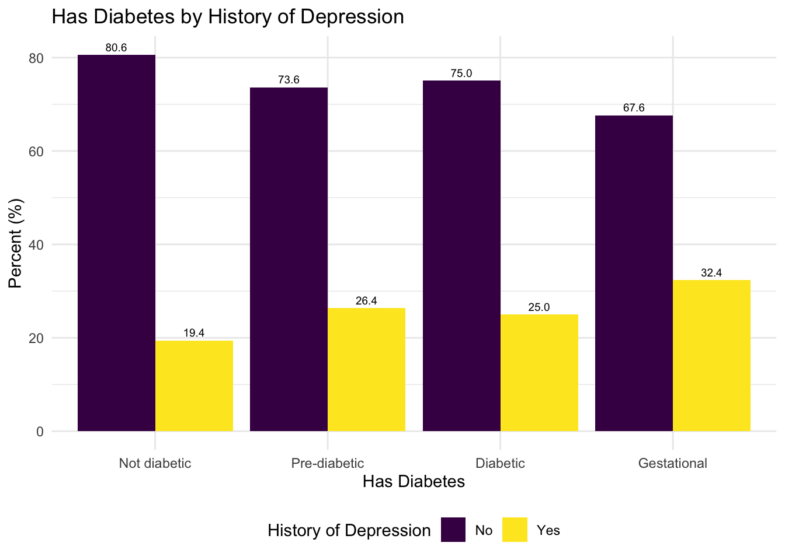
diab_type
comorbidities_plot(diabetes_comorbidities, comorbidity, "Reported Type")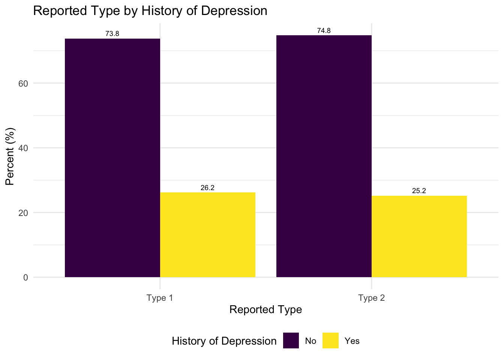
eval_type
comorbidities_plot(diabetes_comorbidities, comorbidity, "Evaluated Type")Blindness
comorbidity = "Blindness"has_diabetes
comorbidities_plot(diabetes_comorbidities, comorbidity, "Has Diabetes")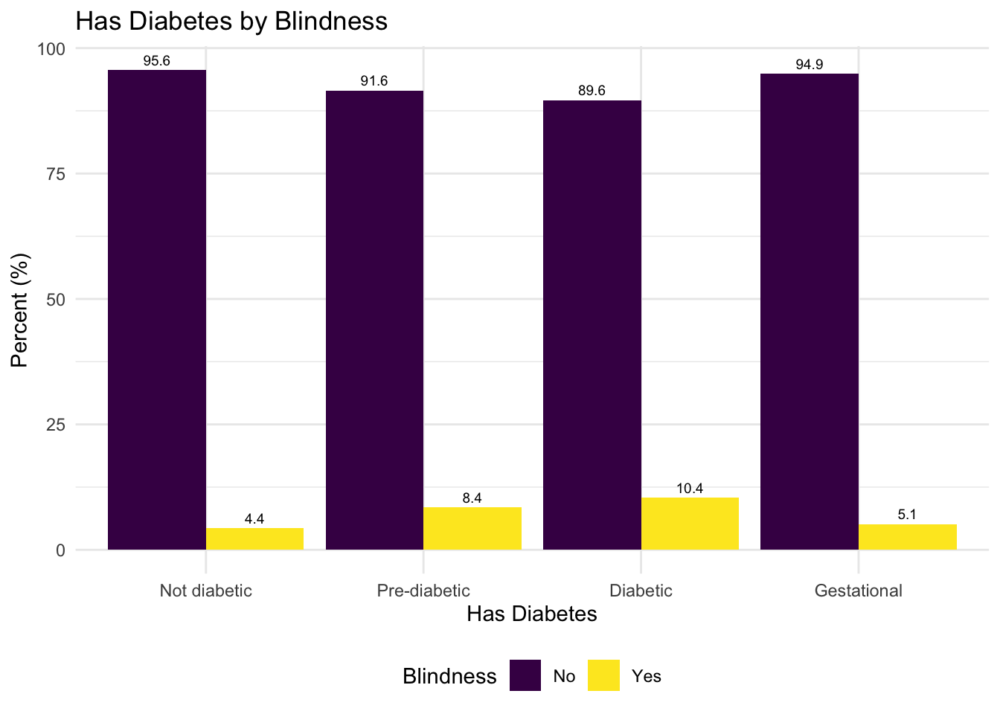
diab_type
comorbidities_plot(diabetes_comorbidities, comorbidity, "Reported Type")
eval_type
comorbidities_plot(diabetes_comorbidities, comorbidity, "Evaluated Type")
MI/CHD
comorbidity = "History of MI/CHD"has_diabetes
comorbidities_plot(diabetes_comorbidities, comorbidity, "Has Diabetes")diab_type
comorbidities_plot(diabetes_comorbidities, comorbidity, "Reported Type")eval_type
comorbidities_plot(diabetes_comorbidities, comorbidity, "Evaluated Type")Stroke
comorbidity = "History of Stroke"has_diabetes
comorbidities_plot(diabetes_comorbidities, comorbidity, "Has Diabetes")diab_type
comorbidities_plot(diabetes_comorbidities, comorbidity, "Reported Type")eval_type
comorbidities_plot(diabetes_comorbidities, comorbidity, "Evaluated Type")Arthritis
comorbidity = "History of Arthritis"has_diabetes
comorbidities_plot(diabetes_comorbidities, comorbidity, "Has Diabetes")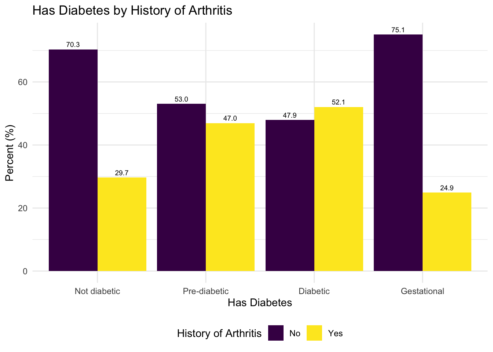
diab_type
comorbidities_plot(diabetes_comorbidities, comorbidity, "Reported Type")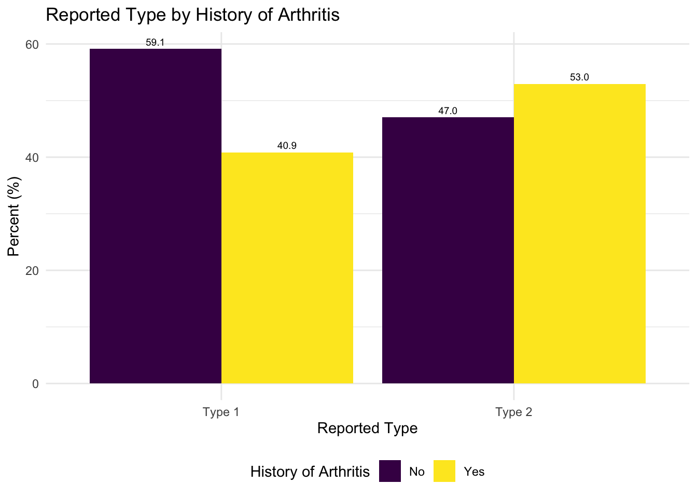
eval_type
comorbidities_plot(diabetes_comorbidities, comorbidity, "Evaluated Type")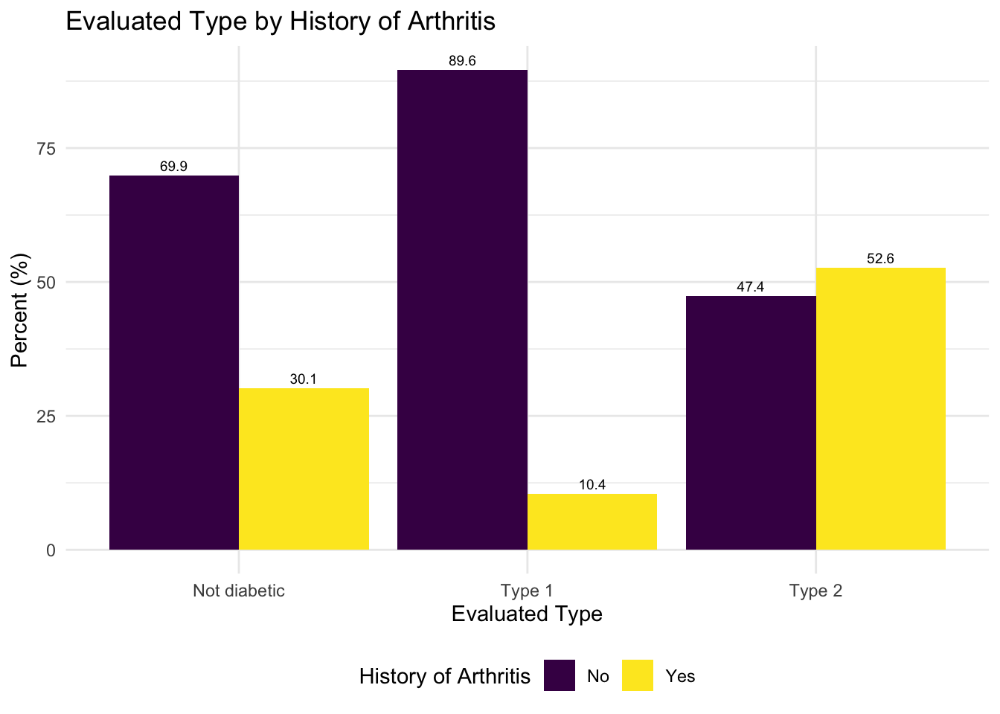
Asthma
has_diabetes
comorbidities_plot(diabetes_comorbidities, "History of Asthma", "Has Diabetes")comorbidities_plot(diabetes_comorbidities, "Currently Have Asthma", "Has Diabetes")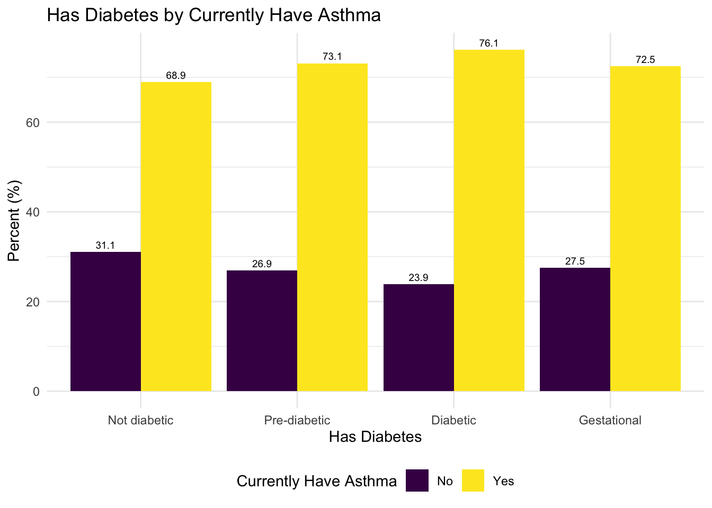
diab_type
comorbidities_plot(diabetes_comorbidities, "History of Asthma", "Reported Type")comorbidities_plot(diabetes_comorbidities, "Currently Have Asthma", "Reported Type")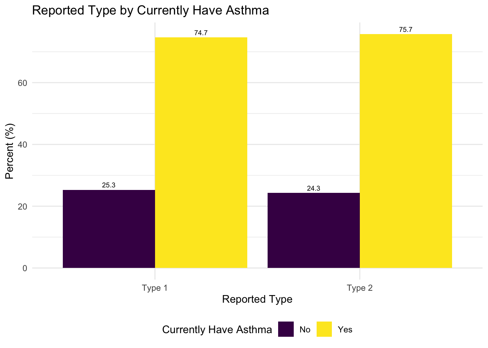
eval_type
comorbidities_plot(diabetes_comorbidities, "History of Asthma", "Evaluated Type")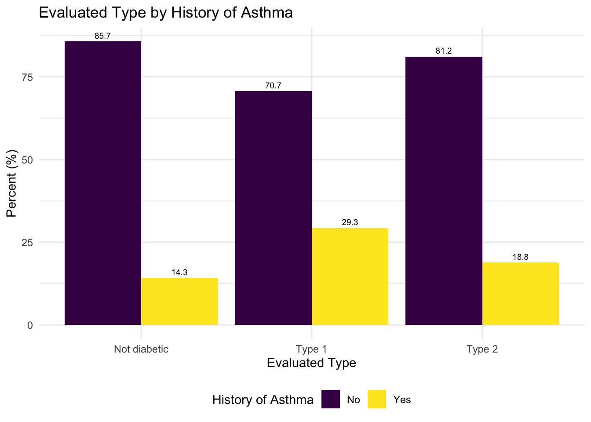
comorbidities_plot(diabetes_comorbidities, "Currently Have Asthma", "Evaluated Type")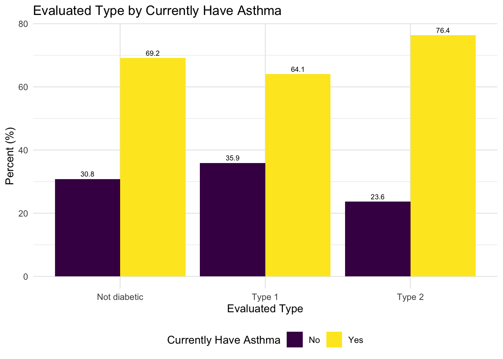
COVID-19
comorbidity = "Ever Tested Positive for Covid-19"has_diabetes
comorbidities_plot(diabetes_comorbidities, comorbidity, "Has Diabetes")diab_type
comorbidities_plot(diabetes_comorbidities, comorbidity, "Reported Type")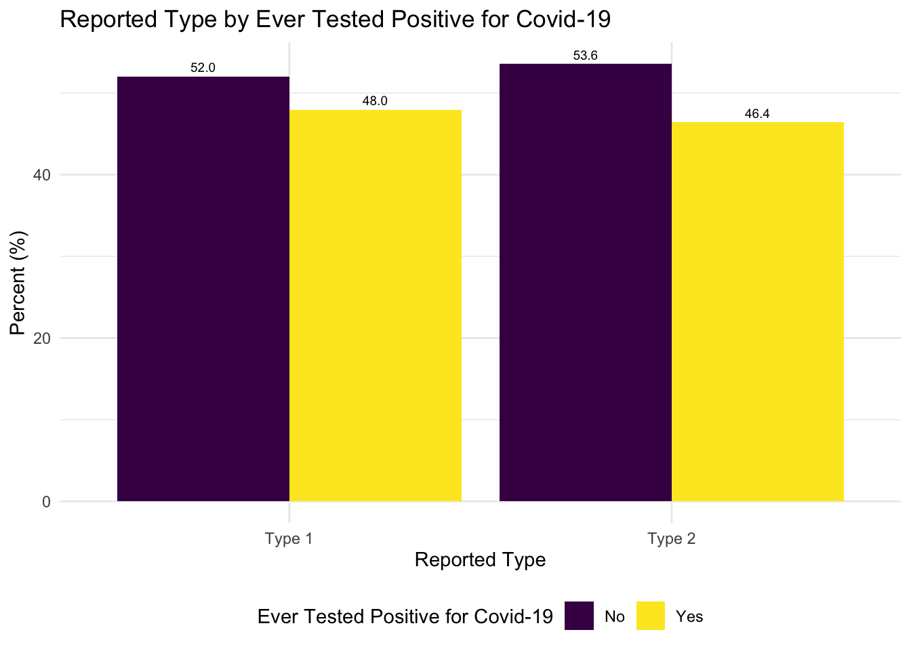
eval_type
comorbidities_plot(diabetes_comorbidities, comorbidity, "Evaluated Type")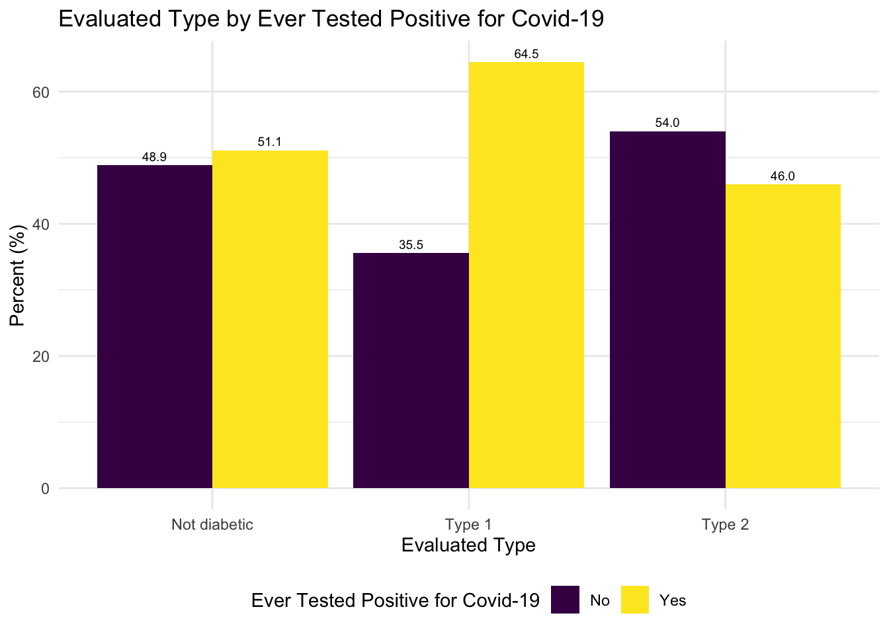
Bronchitis
comorbidity = "History of Bronchitis"has_diabetes
comorbidities_plot(diabetes_comorbidities, comorbidity, "Has Diabetes")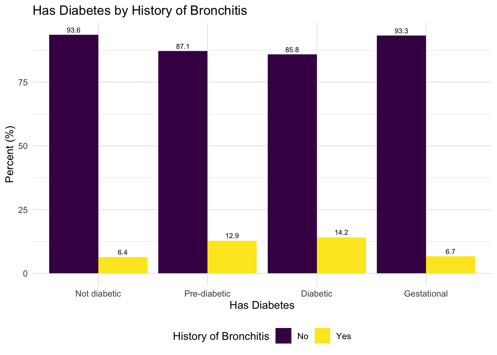
diab_type
comorbidities_plot(diabetes_comorbidities, comorbidity, "Reported Type")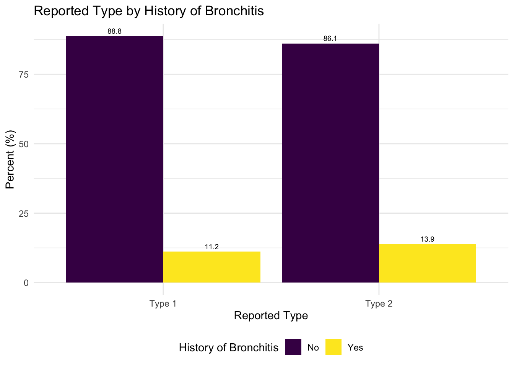
eval_type
comorbidities_plot(diabetes_comorbidities, comorbidity, "Evaluated Type")Associated Factors
diabetes_factors =
diabetes_df |>
mutate(
high_bp = recode_factor(high_bp),
a1c_check = case_match(a1c_check, 0 ~ "No", 1 ~ "Yes", NA ~ NA),
a1c_check = recode_factor(a1c_check),
chol_meds = recode_factor(chol_meds),
chol_check = recode_factor(chol_check),
smoker = factor(smoker, levels = c("Current smoker (every day)", "Current smoker (some days)", "Former smoker", "Never smoked")),
ecigs = recode_factor(ecigs),
prediabetic = factor(prediabetic, levels = c("Yes", "No", "Gestational")),
obese = recode_factor(obese),
cancer = recode_factor(cancer),
heavy_drinking = recode_factor(heavy_drinking),
binge_drinking = recode_factor(binge_drinking)
) |>
select(high_bp, a1c_check, chol_meds, chol_check, smoker, ecigs, prediabetic, obese, cancer, heavy_drinking, binge_drinking, has_diabetes, diab_type, eval_type) |>
rename(
`High Blood Pressure` = high_bp,
`High Cholesterol` = chol_check,
`Meds Usage for Cholesterol` = chol_meds,
`Checked A1C in the Past Year` = a1c_check,
`Smoking Status` = smoker,
`E-Cigarette Use` = ecigs,
`Prediabetes Diagnosis` = prediabetic,
`Overweight/Obese (Computed)` = obese,
`Cancer Diagnosis` = cancer,
`Heavy Drinking` = heavy_drinking,
`Binge Drinking` = binge_drinking,
`Has Diabetes` = has_diabetes,
`Reported Type` = diab_type,
`Evaluated Type` = eval_type
)This section explores the distribution of related factors across diabetes diagnoses.
- High blood pressure
- High cholesterol
- Smoking status
- Ever received a prediabetes diagnosis
- Overweight/obese
- Ever received a cancer diagnosis
- Drinking behavior
We originally explored high blood sugar and A1C checks in this
section, but decided not to publish those models because only people
with diabetes (as per has_diabetes) were asked this
question, severely skewing our results.
People with low/normal blood pressure were represented much more in the group of people who are diabetic compared to any other group. There is a slight increase in high blood representation percentage in the type I group compared to the type II group in the reported cases, but that is heightened in comparing the evaluated type variable.
High cholesterol is more common in the non-diabetic group than the diabetic group. There is a higher percentage of high cholesterol in type I patients than type II.
In our smoking comparison, we examined both tobacco and e-cigarette users. Former smokers make up a higher percentage of the diabetic group than the non-diabetic group, with a higher percentage in the type II group.
People who have been computed to be overweight/obese by BRFSS investigators are more represented in the type I group than the type II group. Cancer is significantly more associated with type II than type I diagnosis, according to the evaluated type variable. Drinking does not have a significant association with any of the data.
High BP
factor = "High Blood Pressure"has_diabetes
comorbidities_plot(diabetes_factors, factor, "Has Diabetes")
diab_type
comorbidities_plot(diabetes_factors, factor, "Reported Type")
eval_type
comorbidities_plot(diabetes_factors, factor, "Evaluated Type")
High Cholesterol
has_diabetes
comorbidities_plot(diabetes_factors, "High Cholesterol", "Has Diabetes")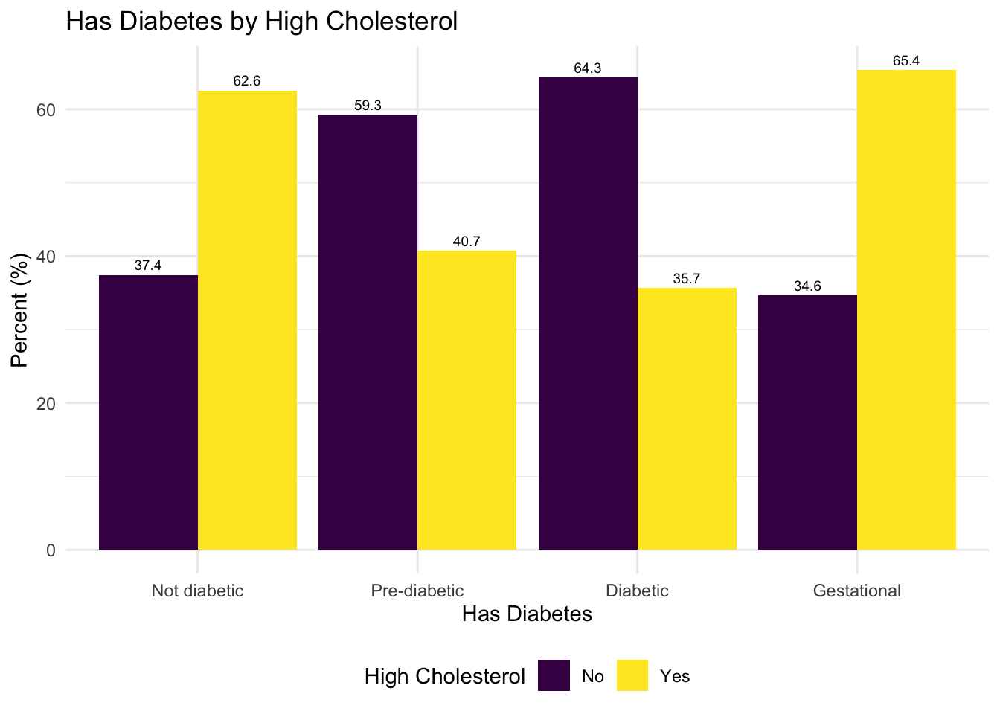
comorbidities_plot(diabetes_factors, "Meds Usage for Cholesterol", "Has Diabetes")diab_type
comorbidities_plot(diabetes_factors, "High Cholesterol", "Reported Type")
comorbidities_plot(diabetes_factors, "Meds Usage for Cholesterol", "Reported Type")eval_type
comorbidities_plot(diabetes_factors, "High Cholesterol", "Evaluated Type")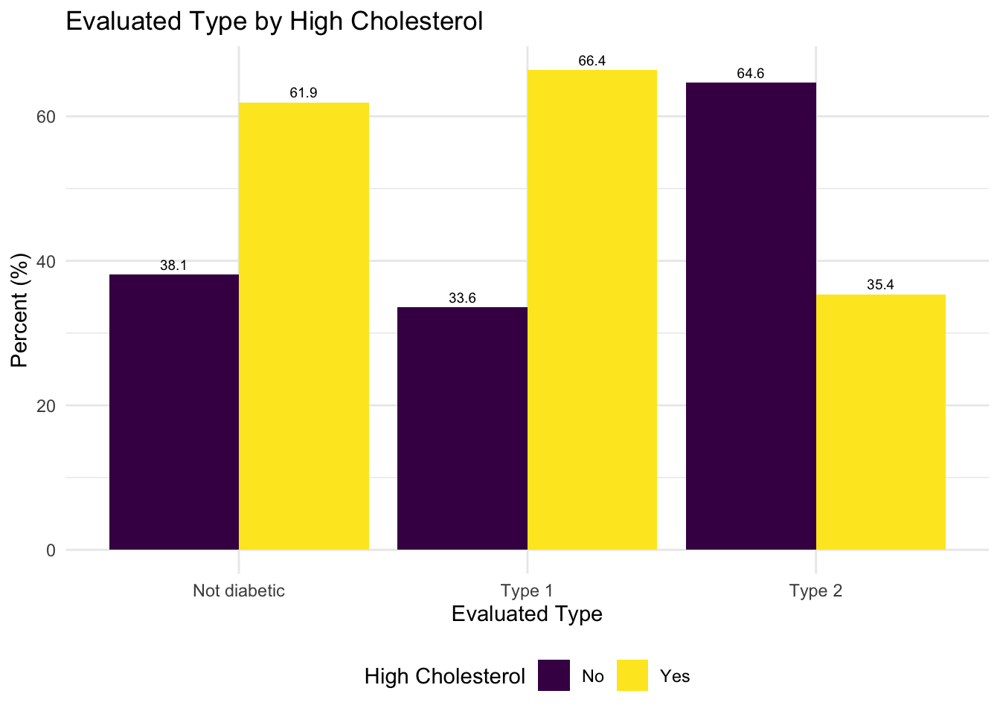
comorbidities_plot(diabetes_factors, "Meds Usage for Cholesterol", "Evaluated Type")Smoker
has_diabetes
comorbidities_plot(diabetes_factors, "Smoking Status", "Has Diabetes")comorbidities_plot(diabetes_factors, "E-Cigarette Use", "Has Diabetes")diab_type
comorbidities_plot(diabetes_factors, "Smoking Status", "Reported Type")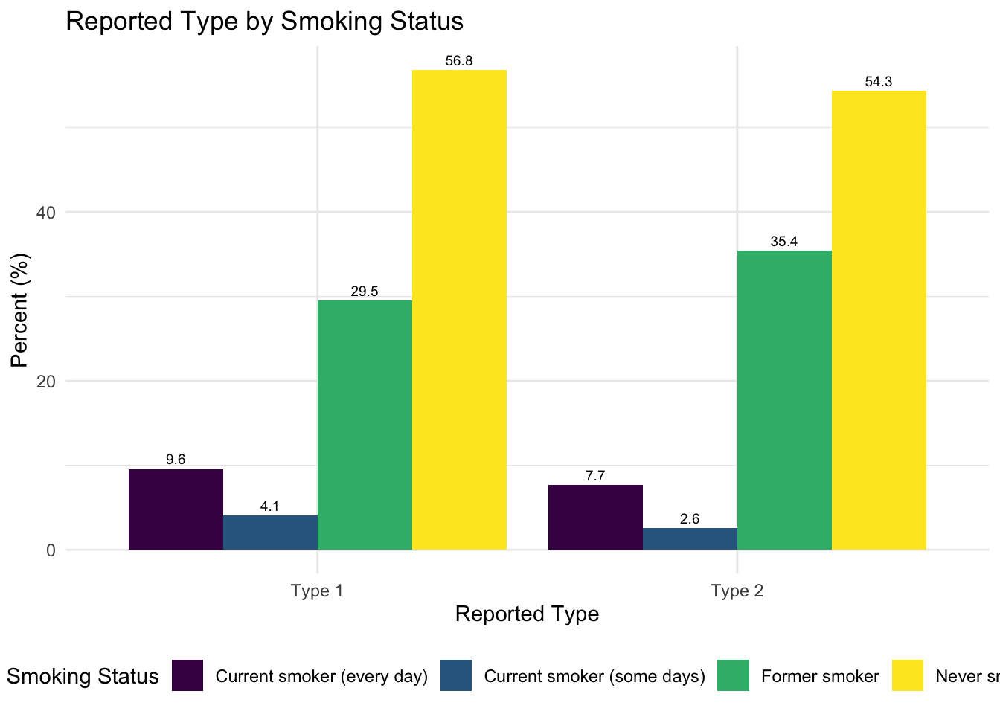
comorbidities_plot(diabetes_factors, "E-Cigarette Use", "Reported Type")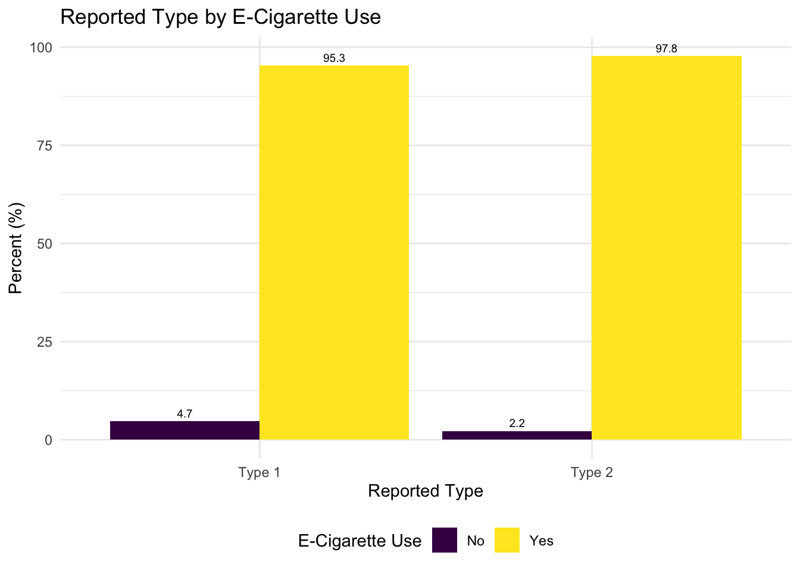
eval_type
comorbidities_plot(diabetes_factors, "Smoking Status", "Evaluated Type")comorbidities_plot(diabetes_factors, "E-Cigarette Use", "Evaluated Type")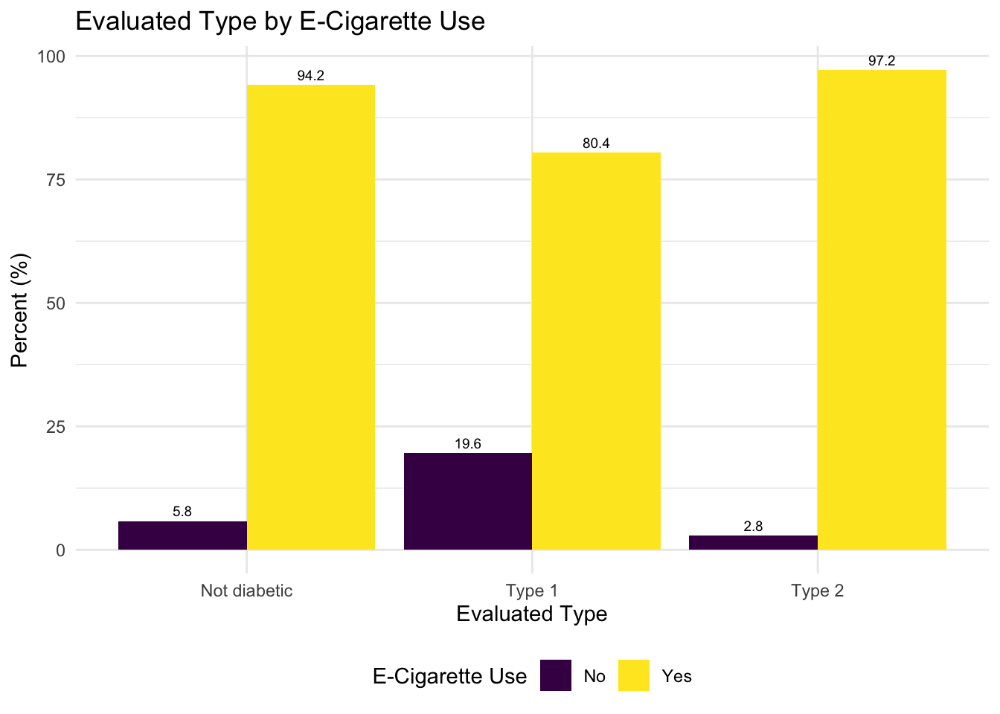
Obesity
factor = "Overweight/Obese (Computed)"has_diabetes
comorbidities_plot(diabetes_factors, factor, "Has Diabetes")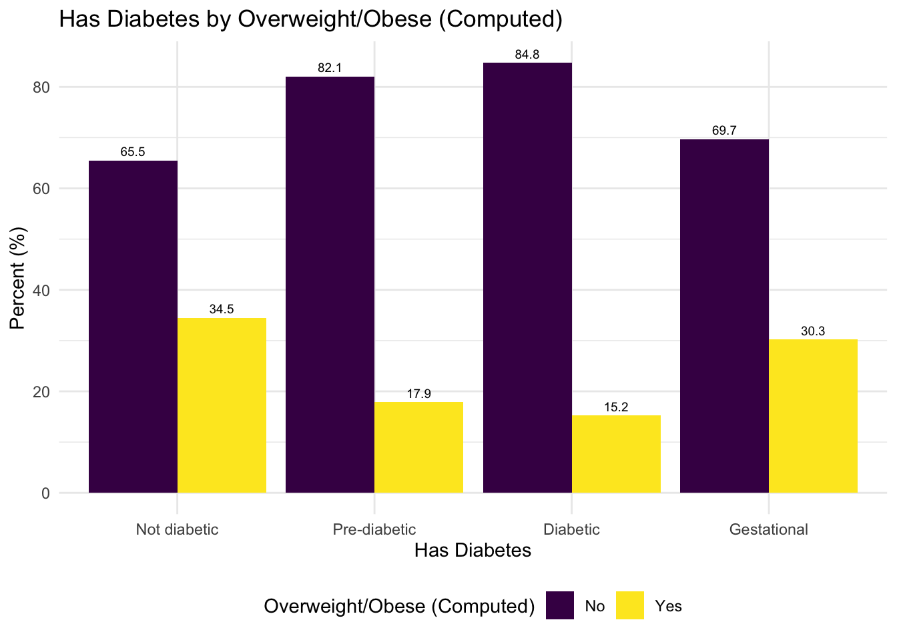
diab_type
comorbidities_plot(diabetes_factors, factor, "Reported Type")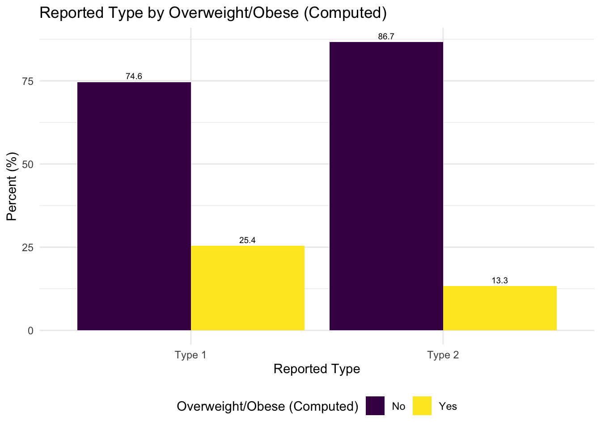
eval_type
comorbidities_plot(diabetes_factors, factor, "Evaluated Type")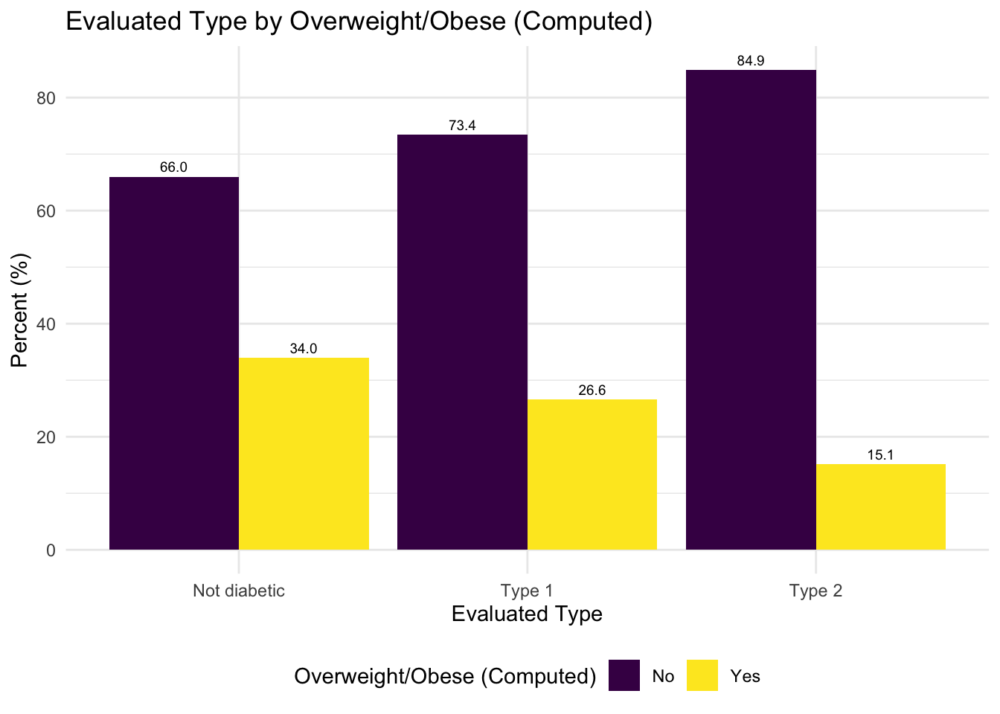
Cancer
factor = "Cancer Diagnosis"has_diabetes
comorbidities_plot(diabetes_factors, factor, "Has Diabetes")diab_type
comorbidities_plot(diabetes_factors, factor, "Reported Type")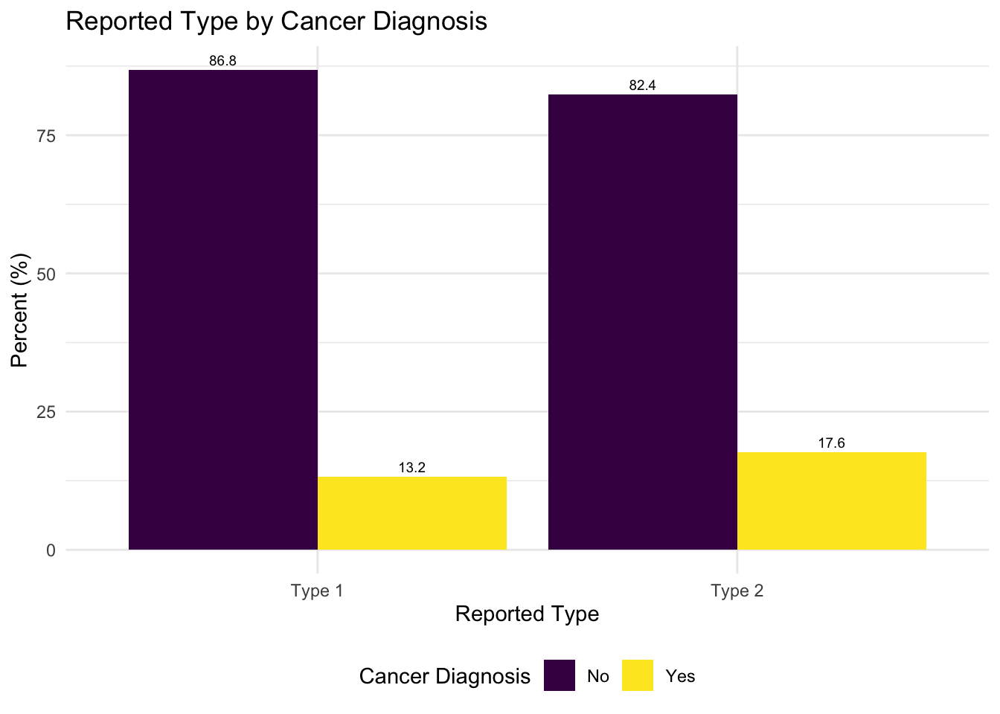
eval_type
comorbidities_plot(diabetes_factors, factor, "Evaluated Type")
Drinking
has_diabetes
comorbidities_plot(diabetes_factors, "Heavy Drinking", "Has Diabetes")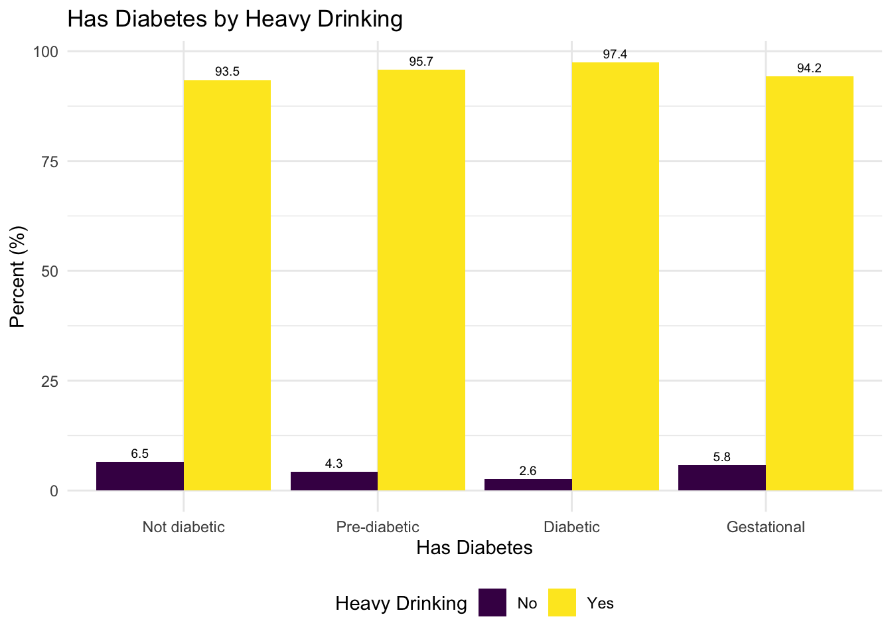
comorbidities_plot(diabetes_factors, "Binge Drinking", "Has Diabetes")diab_type
comorbidities_plot(diabetes_factors, "Heavy Drinking", "Reported Type")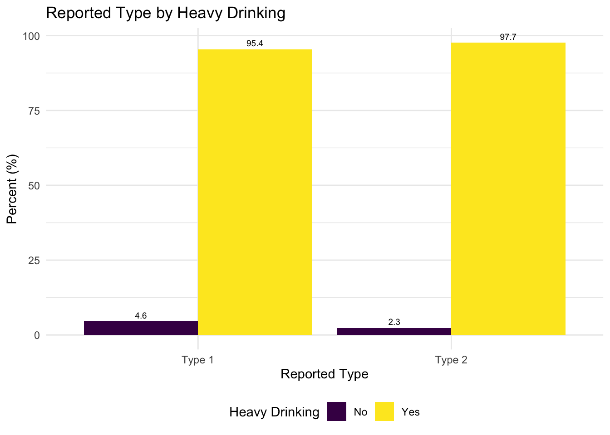
comorbidities_plot(diabetes_factors, "Binge Drinking", "Reported Type")eval_type
comorbidities_plot(diabetes_factors, "Heavy Drinking", "Evaluated Type")comorbidities_plot(diabetes_factors, "Binge Drinking", "Evaluated Type")